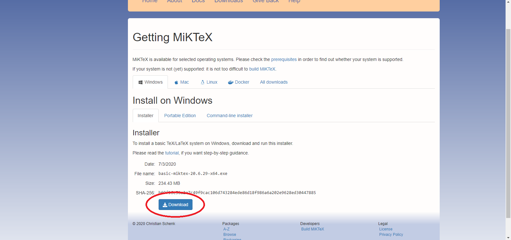
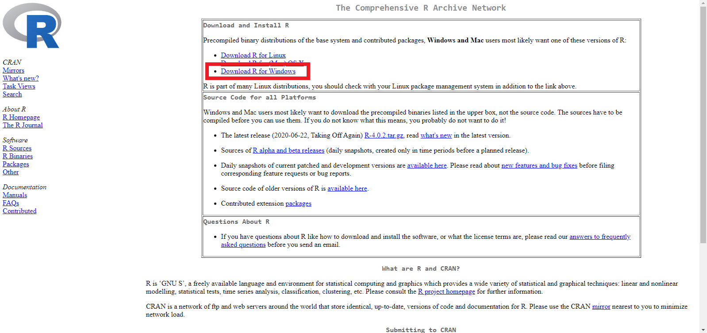
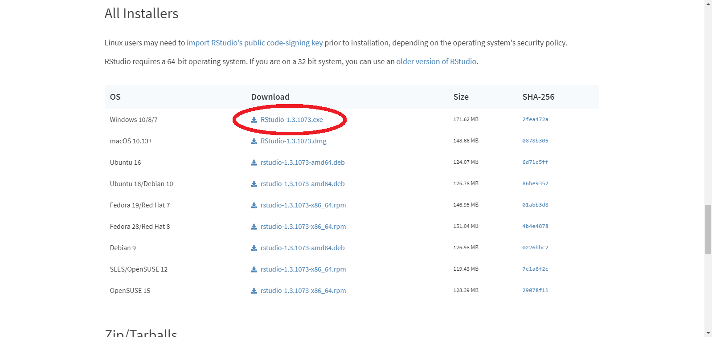

Capítulo: 1 Instalação Windows
Para utilizarmos o padrão devemos instalar alguns softwares, eles são o Miktek, o R e o Rstudio. Segue abaixo cada um deles na ordem que devem ser instalados.
1.0.1 Miktek
Para fazer o download do Miktek no Windows, é preciso fazer o download do instalador .exe, no link que segue abaixo você irá ser redirecionado a página de download do Miktek, na página que você sera levado, é só clicar no botão azul Download. Após o link, seguirá uma screenshot para ajudar no download do Miktek.
- Download MiKTeX (Clique segurando o ‘ctrl’)

Após o download você deve entrar na pasta onde você fez o download, e executar o instalador do Miktek. Segue abaixo screenshots para ajudar na instalação do miktek.
1.0.2 R
Após a instalação do Miktek, você deve fazer o download do executável do software R para poder instala-ló no seu windows. Para o download do R, segue o link abaixo para a página de download, você deve clicar em Download R for Windows na página onde você será levado.
- Download R para Windows (Clique segurando o ‘ctrl’)

1.0.3 Rstudio
Após a instação do miktek, temos a instalação do RStudio. Clique abaixo segurando o ‘ctrl’.
